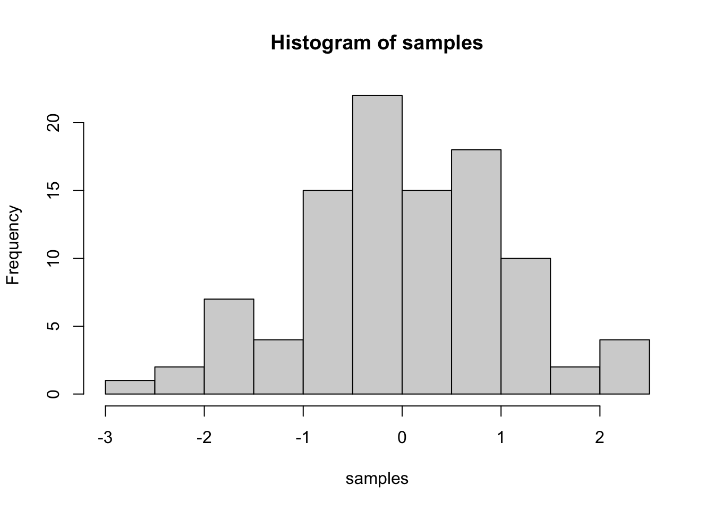
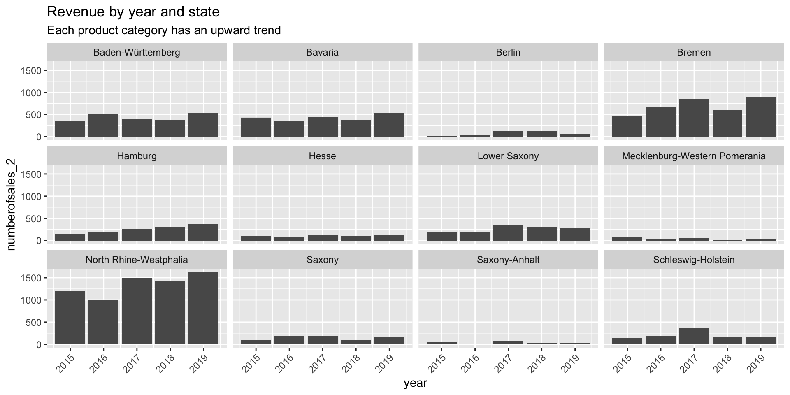

Last compiled: 2020-11-23
Our Task was to analyse the bike sales data. After previously analyzing the data by the bike-type and manufacturing-year we now want to take a look at the number of sales sorted by their state in which they were sold in. Afterwards we want to take a look how these numbers changed over the last years.
Let’s first take a look at the number of sales per state if you add up all the prevoius years together:
# 1.0 Load libraries ----
library(tidyverse)
library(lubridate)
library(writexl)
#Read Excel Files
library(readxl)
# 2.0 Importing Files ----
bikes <- read_xlsx(path = "~/Documents/GitHub/ws20-business-data-science-basics---lab-journal-ABQ1996/DS_101/00_data/01_bike_sales/01_raw_data/bikes.xlsx")
bike_shops <- read_xlsx(path = "~/Documents/GitHub/ws20-business-data-science-basics---lab-journal-ABQ1996/DS_101/00_data/01_bike_sales/01_raw_data/bikeshops.xlsx")
bike_orders <- read_xlsx(path = "~/Documents/GitHub/ws20-business-data-science-basics---lab-journal-ABQ1996/DS_101/00_data/01_bike_sales/01_raw_data/orderlines.xlsx")
# 3.0 Examining Data ----
glimpse(bike_orders)## Rows: 15,644
## Columns: 7
## $ ...1 <chr> "1", "2", "3", "4", "5", "6", "7", "8", "9", "10", "11", "12", "13", "14", "15", "1…
## $ order.id <dbl> 1, 1, 2, 2, 3, 3, 3, 3, 3, 4, 5, 5, 5, 5, 6, 6, 6, 6, 7, 7, 7, 7, 7, 7, 7, 7, 7, 7,…
## $ order.line <dbl> 1, 2, 1, 2, 1, 2, 3, 4, 5, 1, 1, 2, 3, 4, 1, 2, 3, 4, 1, 2, 3, 4, 5, 6, 7, 8, 9, 10…
## $ order.date <dttm> 2015-01-07, 2015-01-07, 2015-01-10, 2015-01-10, 2015-01-10, 2015-01-10, 2015-01-10…
## $ customer.id <dbl> 2, 2, 10, 10, 6, 6, 6, 6, 6, 22, 8, 8, 8, 8, 16, 16, 16, 16, 9, 9, 9, 9, 9, 9, 9, 9…
## $ product.id <dbl> 2681, 2411, 2629, 2137, 2367, 1973, 2422, 2655, 2247, 2408, 2252, 2410, 2717, 2244,…
## $ quantity <dbl> 1, 1, 1, 1, 1, 1, 1, 1, 1, 1, 1, 2, 1, 1, 1, 1, 1, 1, 1, 1, 1, 1, 1, 1, 1, 1, 1, 2,…# 4.0 Joining Data ----
bike_orderlines_joined <- bike_orders %>% left_join(bikes, by = c("product.id"="bike.id")) %>% left_join(bike_shops, by = c("customer.id" = "bikeshop.id"))
bike_orderlines_joined %>% glimpse()## Rows: 15,644
## Columns: 19
## $ ...1 <chr> "1", "2", "3", "4", "5", "6", "7", "8", "9", "10", "11", "12", "13", "14", "15",…
## $ order.id <dbl> 1, 1, 2, 2, 3, 3, 3, 3, 3, 4, 5, 5, 5, 5, 6, 6, 6, 6, 7, 7, 7, 7, 7, 7, 7, 7, 7,…
## $ order.line <dbl> 1, 2, 1, 2, 1, 2, 3, 4, 5, 1, 1, 2, 3, 4, 1, 2, 3, 4, 1, 2, 3, 4, 5, 6, 7, 8, 9,…
## $ order.date <dttm> 2015-01-07, 2015-01-07, 2015-01-10, 2015-01-10, 2015-01-10, 2015-01-10, 2015-01…
## $ customer.id <dbl> 2, 2, 10, 10, 6, 6, 6, 6, 6, 22, 8, 8, 8, 8, 16, 16, 16, 16, 9, 9, 9, 9, 9, 9, 9…
## $ product.id <dbl> 2681, 2411, 2629, 2137, 2367, 1973, 2422, 2655, 2247, 2408, 2252, 2410, 2717, 22…
## $ quantity <dbl> 1, 1, 1, 1, 1, 1, 1, 1, 1, 1, 1, 2, 1, 1, 1, 1, 1, 1, 1, 1, 1, 1, 1, 1, 1, 1, 1,…
## $ model <chr> "Spectral CF 7 WMN", "Ultimate CF SLX Disc 8.0 ETAP", "Neuron CF 8", "Speedmax C…
## $ model.year <dbl> 2021, 2020, 2021, 2019, 2020, 2020, 2020, 2021, 2020, 2020, 2020, 2020, 2021, 20…
## $ frame.material <chr> "carbon", "carbon", "carbon", "carbon", "aluminium", "carbon", "carbon", "alumin…
## $ weight <dbl> 13.80, 7.44, 14.06, 8.80, 11.50, 8.80, 8.20, 8.85, 14.40, 6.50, 21.25, 7.35, 8.9…
## $ price <dbl> 3119, 5359, 2729, 1749, 1219, 1359, 2529, 1559, 3899, 6629, 2919, 4089, 2729, 22…
## $ category <chr> "Mountain - Trail - Spectral", "Road - Race - Ultimate", "Mountain - Trail - Neu…
## $ gender <chr> "female", "unisex", "unisex", "unisex", "unisex", "unisex", "female", "unisex", …
## $ url <chr> "https://www.canyon.com/en-de/mountain-bikes/trail-bikes/spectral/spectral-cf-7-…
## $ name <chr> "AlexandeRad", "AlexandeRad", "WITT-RAD", "WITT-RAD", "fahrschneller", "fahrschn…
## $ location <chr> "Hamburg, Hamburg", "Hamburg, Hamburg", "Bremen, Bremen", "Bremen, Bremen", "Stu…
## $ lat <dbl> 53.57532, 53.57532, 53.07379, 53.07379, 48.78234, 48.78234, 48.78234, 48.78234, …
## $ lng <dbl> 10.015340, 10.015340, 8.826754, 8.826754, 9.180819, 9.180819, 9.180819, 9.180819… #glimpse(bike_orderlines_joined)
# 5.0 Wrangling Data ----
bike_orderlines_joined %>%
select(category) %>%
filter(str_detect(category, "^Mountain")) %>%
unique()## # A tibble: 10 x 1
## category
## <chr>
## 1 Mountain - Trail - Spectral
## 2 Mountain - Trail - Neuron
## 3 Mountain - Dirt Jump - Stitched
## 4 Mountain - Enduro - Torque
## 5 Mountain - Trail - Grand Canyon
## 6 Mountain - Cross-Country - Lux
## 7 Mountain - Enduro - Strive
## 8 Mountain - Downhill - Sender
## 9 Mountain - Fat Bikes - Dude
## 10 Mountain - Cross-Country - Exceed# 6.0 Business Insights ----
#Separate the joined category category into 3 separate columns
bike_orderlines_joined <- separate(bike_orderlines_joined, col=category, into = c("cat.1","cat.2","cat.3"), sep = " - ")
#Calculate the total price of the order
bike_orderlines_joined <- mutate(bike_orderlines_joined, total.price = quantity*price)
bike_orderlines_wrangled <- bike_orderlines_joined
#8.1 Which state sells the most of the bikes?
bike_orderlines_bystate <- bike_orderlines_wrangled
#Separate the joined location category into 2 separate columns
bike_orderlines_bystate <- separate(bike_orderlines_wrangled, col=location, into = c("state","city"), sep = ", ")
# Manipulate the data
sales_by_state <- bike_orderlines_bystate
# Select columns
sales_by_state %>%
select(state, city, quantity) %>%
# Grouping by year and summarizing sales
group_by(state) %>%
summarize(numberofsales = sum(quantity)) %>%
# Step 2 - Visualize
# Setup canvas with the columns year (x-axis) and sales (y-axis)
ggplot(aes(x = state, y = numberofsales)) +
# Geometries
geom_col(fill = "#2DC6D6") + # Use geom_col for a bar plot
geom_label(aes(label = numberofsales)) + # Adding labels to the bars
geom_smooth(method = "lm", se = FALSE) + # Adding a trendline
theme(axis.text.x = element_text(angle = 45, hjust = 1)) +
# Formatting
# scale_y_continuous(labels = scales::dollar) + # Change the y-axis.
# Again, we have to adjust it for euro values
labs(
title = "Revenue by state",
subtitle = "Upward Trend",
x = "", # Override defaults for x and y
y = "Revenue"
)
Interesting! Let’s see if Bremen is still the city with the most sales if we additionally sort them by their manufacturing-year:
#8.2 Which state sells the most of the bikes in which year?
sales_by_stateandyear <- bike_orderlines_bystate
# Select columns
sales_by_stateandyear %>%
select(state, city, quantity, order.date) %>%
mutate(year = year(order.date)) %>%
# Group by and summarize year and main catgegory
group_by(state,year) %>%
summarise(numberofsales_2 = sum(quantity)) %>%
ungroup() %>%
# Set up x, y, fill
ggplot(aes(x = state, y = numberofsales_2, fill = year)) +
# Geometries
geom_col() + # Run up to here to get a stacked bar plot
# Facet
facet_wrap(~ year) +
theme(axis.text.x = element_text(angle = 45, hjust = 1)) +
labs(
title = "Revenue by year and main category",
subtitle = "Each product category has an upward trend",
fill = "Main category" # Changes the legend name
)